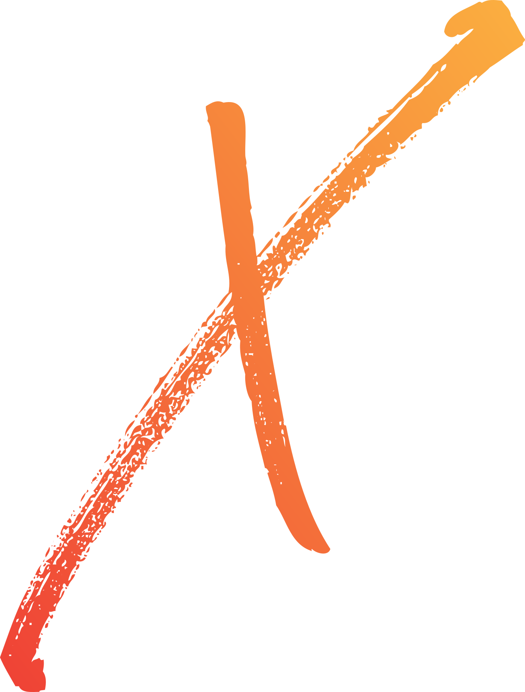
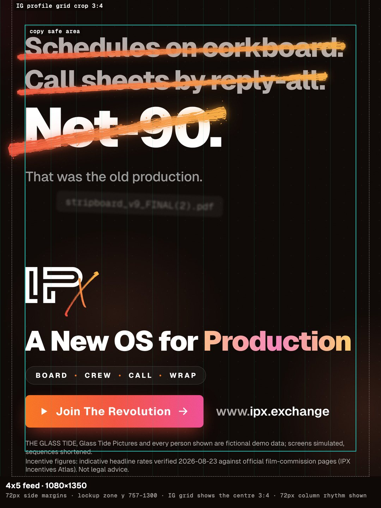

One colourUse a supplied mono version when colour is unavailable.

Small spacesUse the X icon when the full logo is too small.
Give it room
Leave at least three times the IP line thickness around the logo.
Full logo: at least 33 px high on screen.
X icon: at least 20 px high on screen.
Keep it intact
Don’t stretch, rotate or recolour the artwork.
Don’t add shadows or effects to the logo.
Don’t draw a stroke through the logo, names, links or legal copy.
Use the stroke with a purpose
Cross out the old way
Strike through a problem or outdated process. Use no more than three lines; keep the words readable.
Underline the benefit
Emphasise one short phrase, such as “One OS.” Use one underline per frame.
Connect the story
Use one continuous path across a composition or carousel. Match it at each slide edge.
For print, keep the IP letters at least 8 mm high. Use the supplied black logo on light backgrounds. Check contrast and fine lines at the final output size.
IPX Brand OS v1 · Logo & stroke · 2 / 15
Colour
Black, white and IPX orange form the core palette.
Black
#000000
Primary digital background.
White
#FFFFFF
Headlines and primary text.
IPX orange
#F5793B
Solid accents, focus and action.
Orange scale
Use lighter steps on dark surfaces and darker steps on light surfaces. Check the final text/background pairing.
50 #FFF8F3
100 #FFEEE0
200 #FFD9BD
300 #FFC199
400 #FA9D6D
500 #F5793B
600 #E6592A
700 #C4461F
800 #9E3617
900 #7D2A12
For clear actions
Use black text on solid IPX orange. Use white or light grey for body copy on black. Keep large coloured fields away from long passages.
For accessible reading
Text needs at least 4.5:1 contrast; large text needs 3:1. Keep essential labels off multicolour gradients unless every part of the pairing passes.
Preserve the signature stroke
The supplied logo and brush artwork retain their red-to-amber gradient, #EF4136 → #FBB040. Use those files as supplied. Use the core palette for new layouts around them.
IPX Brand OS v1 · Colour · 3 / 15
Brand family
Keep the IPX foundation. Give each brand its established accent.
CultureX
#FB7185 → #EC4899
LIVEX
#FB923C → #F59E0B
CreatorX
#A78BFA → #6366F1
BrandX
#22D3EE → #0EA5E9
PODX
#34D399 → #14B8A6
IPX Studios
#FACC15 → #F97316
Use the right colour at the right level
These are the public ecosystem accents. Keep the brand name visible; colour alone must never identify a brand. In product screenshots, retain each desk’s own interface colours.
Core web accents
IPX web actions use #F97316 → #EF4444 → #EC4899. The light highlight palette is #FDBA74 → #F472B6 → #FDE047. Use accents sparingly; keep supporting copy solid and readable.
IPX Brand OS v1 · Brand family · 4 / 15
Typography
Use the platform’s system sans-serif. Make hierarchy through size, weight and space.
A New OS for IP
Clear language. Strong headings. Room to read.
The IPX digital system uses the native sans-serif on each device. Use regular 400 for body copy, 600 for labels, 700 for supporting headings and 900 for major display headlines.
ui-sans-serif,system-ui,sans-serif,"Apple Color Emoji","Segoe UI Emoji","Segoe UI Symbol","Noto Color Emoji"
Role
Size
Weight & spacing
Web hero
56–192 px, fluid
900 · line height 0.82 · tracking −0.045em
Web section heading
40–88 px, fluid
900 · line height 0.95 · tracking −0.04em
Supporting copy
16–20 px
300–400 · line height 1.625
Card title / body
18 px / 14 px
700 / 400 · body line height 1.625
These are digital reference sizes. Scale print and campaign copy for the viewing distance. Use at least 16 px for web reading text, keep paragraphs within 45–75 characters, and preserve browser zoom. Use system monospace only for code and measurements.
Keep lettering in supplied campaign artwork intact. The system stack is the standard for new editable type; it does not identify the font embedded in an image.
IPX Brand OS v1 · Typography · 5 / 15
Layout
Lead with the message. Follow with proof. Finish with a clear next step.

Feed layout: 72 px side margins on a 1080 px canvas.
Campaign layouts
Use one headline, one useful screen or example, and one clear action. Reserve space for the logo and required legal copy.
1080 × 1350 feed: 72 px side margins.
1080 × 1920 story: essential copy between y = 240 and 1500; keep platform controls clear.
1920 × 1080: message left, product screens right.
Digital layout
Setting
Value
Breakpoints
640 / 768 / 1024 / 1280 / 1536 px
Spacing & gutters
4 px spacing base. Homepage side gutters: 24 px. Founding 50, About and public desk pages: 16 px.
Content width
Homepage hero: max 1280 px. Sections: max 1152 px.
Adapt the grid to the content and device. Keep the logo, message, next step and disclosures inside the safe area. On mobile, stack content in reading order and keep controls at least 44 × 44 px.
Use a simple end card to bring the story together. Leave the viewer with one next step.
Product imagery
Use the product screen as the main image.
Keep the desk label and “DEMO · SIMULATED” readable.
Use supplied fictional demo names and data.
Avoid stock portraits and recognisable Apple hardware.
Motion
Reveal the headline, then draw the stroke.
Let each message read before the next one.
Keep the end card on screen long enough to read.
Respect reduced-motion preferences on the web.
Supplied campaign artwork is shown unchanged as a visual example. Use current product details and asset-specific disclosures when preparing new communications.
IPX Brand OS v1 · Examples · 7 / 15
Voice & names
Confident, concrete and easy to understand.
Company name
Intellectual Property Exchange, Inc.
Brand name
IPX
Core line
A New OS for IP.
Simple invitation
Explore IPX.
Write for the task
Start with a familiar need: a shoot, a brief, a booking or a project.
Explain one benefit with one concrete example.
Use verbs that tell people what happens next: explore, view, read or contact.
Use the full company name in formal attribution. Use IPX in everyday copy.
Make the proof match the words
Describe features and access as they exist for the audience receiving the message. Be precise about rights, fees, payments and eligibility. Keep demos labelled and distinguish examples from customer results.
Too vague
“Unlock a revolutionary creative ecosystem.”
Clearer
“Find the desk for your work.”
Before sharing
Check names, dates, links and product details.
Keep required disclosures readable and attached to the relevant claim.
Never promise guaranteed income, returns, rights or outcomes.
Use one clear next step that is available to the recipient.
IPX Brand OS v1 · Voice & names · 8 / 15
Audience: filmmakers & crew
Start with the person’s goal. Answer the barrier with useful proof.
Fictional audience archetypes for communication planning. Names describe representative needs, not individual customers or research findings.
Maya
The Unfunded Auteur Writer-director developing a first feature.
Goal
Make the film while protecting her rights.
Barrier
Gatekeepers, complex entries and uncertain terms.
Proof to show
Plain-language rules, rights terms and a clear project walkthrough.
Relevant area
Production / Studio
Dez
The Producer-Operator Independent or line producer managing a shoot.
Goal
Move the project forward with traceable decisions and costs.
Barrier
Scattered budgets, call sheets and team adoption.
Proof to show
One complete workflow, with roles and approvals explained.
Relevant area
Production
Rico
The Day-Rate Pro Gaffer, editor or colourist working project to project.
Goal
Get booked, credited and paid on agreed terms.
Barrier
Chasing invoices and uncertainty about AI and payment control.
Proof to show
Clear booking terms, human approval and visible work status.
Relevant area
Crew
Choose the message for the person and the moment. Make any offer, feature or next step specific to what is available.
The HTML works offline. Its fonts come from the reader’s device, so letter shapes can vary by platform. The PDF preserves the layout and type used for this edition.
Keep the identity consistent
Use the supplied SVG logo, palette and campaign examples. Preserve original artwork and required disclosures. Match the version number when sharing files.
Intellectual Property Exchange, Inc. IPX Brand OS · Version 1.0 · October 2026